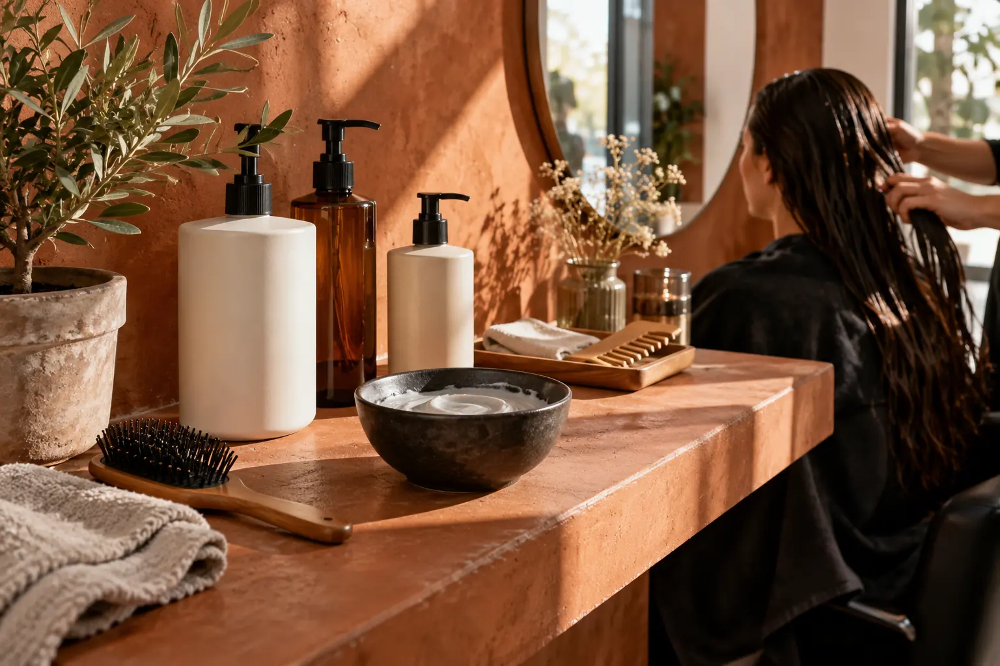

Plaukų priežiūros procedūros kaina ir trukmė: sistema, ilgis bei priedai
Autorius: Madbeauty redakcija · Numatyta 2026 m. lapkričio 30 d. 10:00 (Lietuvos laiku)
Du 2026 m. spalio 9 d. meniu pavyzdžiai parodo, kaip lyginti plaukų procedūrų priedus, jų kainą ir laiką, nevertinant jų kaip viso vizito.

Plaukų procedūrų kainą ir trukmę lyginkite pagal vienodą darbų apimtį. Patikrinkite, ar nurodytas laikas skirtas priedui ar visam vizitui, kokia paslauga siūloma, kas įeina į kainą ir ar ji keičiasi dėl plaukų ilgio, tankio ar papildomo kirpimo. Vienodas minučių skaičius ar panašus pavadinimas dar nereiškia, kad paslaugos vienodos.
Du meniu priedai, kuriuos verta palyginti
- „Looks“ meniu, peržiūrėtame 2026 m. spalio 9 d., intensyvų plaukų drėkinimą dažymo ar kirpimo metu pateikia kaip papildomą procedūrą: 15 min. ir 25 €. Perbraukta 30 € suma yra ankstesnė kaina. Peržiūrėti „Looks“ meniu.
- Tą pačią dieną peržiūrėtame Žirmūnų 22 meniu „Olaplex apsauga naudojant bet kurią dažymo techniką“ pateikiama kaip priedas: 15 min. ir 12 €. Perbraukta 15 € suma yra ankstesnė kaina. Peržiūrėti Žirmūnų 22 meniu.
Abiejuose meniu nurodyta 15 min., tačiau aprašyti skirtingi priedai. Šis laikas nėra viso savarankiško vizito trukmė, o nurodytos kainos nėra Lietuvos rinkos vidurkis ar Madbeauty pasiūlymas. Meniu etiketės ir kainos savaime neįrodo procedūros poveikio.
Pavadinimas neatskleidžia visos priemonių sistemos
Meniu įrašas gali nurodyti paslaugos pavadinimą, bet ne konkretaus produkto numerį, sudėtį ar naudojimo protokolą. Pavyzdžiui, Žirmūnų 22 meniu produkto numerio nepateikia, todėl jo negalima nustatyti ar numanyti iš etiketės. Jei norite palyginti konkrečią priemonę ar sistemą, remkitės teikėjo pateikta jos informacija, o ne vien rinkodariniu pavadinimu.
FDA informuoja, kad ne visuose plaukų glotninimo produktuose yra formaldehido. Tai JAV vartotojams skirtas šaltinis, kuris nenustato Lietuvos taisyklių ir nevertina čia pateiktų meniu priedų. Skaityti FDA informaciją apie plaukų glotninimo produktus.
Ką sulyginti prieš priimant pasiūlymą
- Ar paslauga yra priedas, ar atskiras vizitas? Patikrinkite, ar kaina ir laikas taikomi tik papildomam darbui.
- Kas tiksliai įeina į pasiūlymą? Atskirai išsiaiškinkite, ar įtraukti plovimas, tonavimas, kirpimas, džiovinimas ar formavimas.
- Ar plaukų ilgis arba tankis keičia darbų apimtį, kainą ar laiką? Jei taip, sužinokite, kaip perskaičiuojamas pasiūlymas.
- Kiek trunka visas vizitas? Atskirą priedo laiką palyginkite su bendrai rezervuojamu laiku, įskaitant kitus sutartus darbus.
- Kada nustatyta kaina ir kiek laiko ji galioja? Perbraukta suma yra ankstesnė, ne dabartinė kaina.
Prieš tvirtindami vizitą paprašykite bendros kainos ir viso numatomo laiko, įtraukiant jūsų pasirinktus darbus. Taip galėsite palyginti visą pasiūlymą, o ne vien atskirą priedą.
Jei ieškote konkrečios paslaugos pagal vietą, pirmiausia pasirinkite nacionalinę procedūros grupę, o tada miestą. Vietinę pasiūlą vertinkite pagal realiai rodomus teikėjus ir jų sąlygas; šis gidas neteigia, kad konkrečiame mieste teikėjas ar registracija yra prieinami.
Palyginkite procedūrų aprašus kataloge: Plaukų ir galvos odos priežiūra. Konkrečią darbų apimtį, kainą ir prieinamumą tikrinkite prie realaus teikėjo pasiūlymo.
Šaltiniai
- Faces Hair & Makeup · dažymo ir kirpimo apimtis · www.treatwell.lt
- FDA · plaukų glotninimo produktų sudėtis · www.fda.gov
- Žirmūnų 22 · plaukų paslaugų meniu · www.treatwell.lt
- Looks · kirpimas ir dažymas · www.treatwell.lt